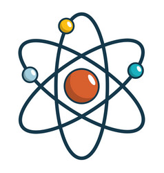

|
Basics |
The Atom

|
Modern Atomic Theory |
Formulas and Reactions |
Chemical Bonding |
The Mole and Stoichimetry |
Gases |
|
Solids and Liquids |
Solutions |
Reaction Dynamics |
Redox |
Acids and Bases |
Organic |
Nuclear |